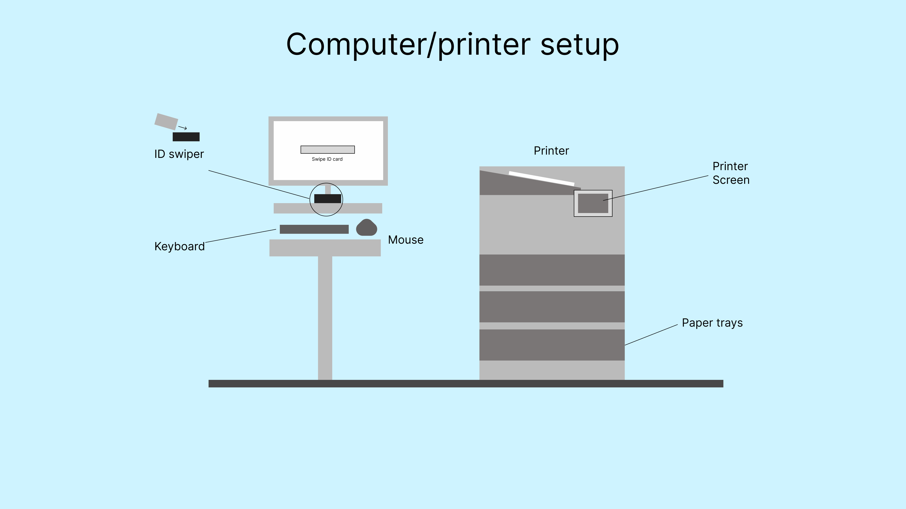
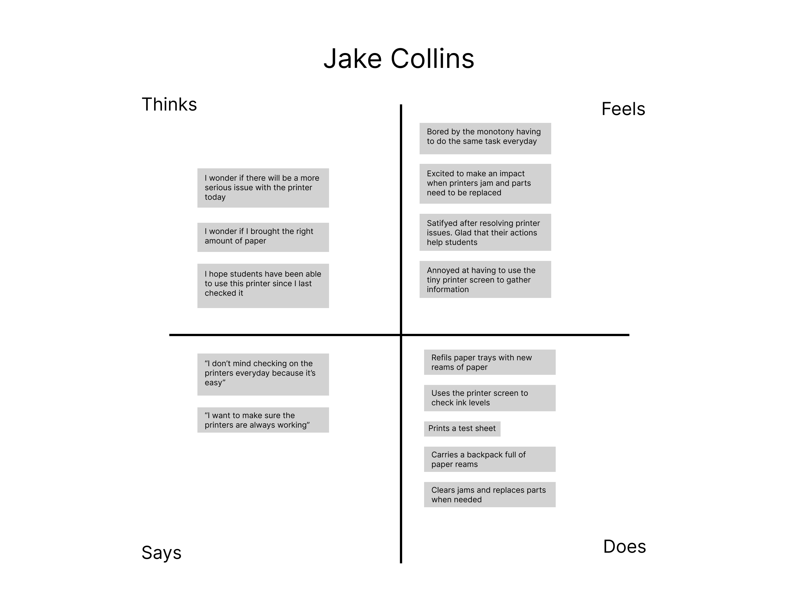
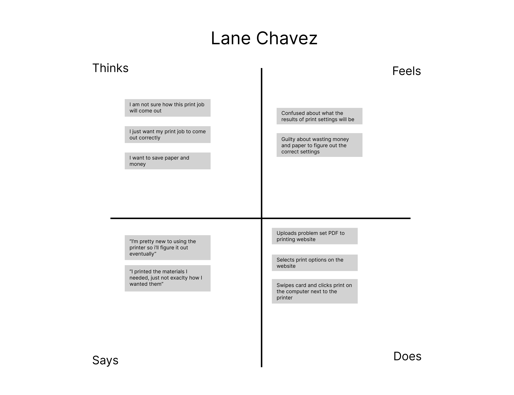
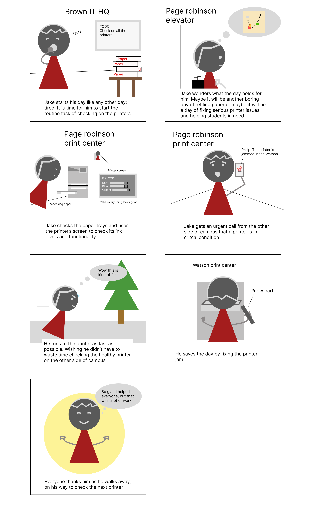

Personas
Part 1: Background
I choose the first floor Page Robinson printer as my interface to
observe. The computer next to the printer allows students to execute
print jobs that they have uploaded to the PaperCut website. The PaperCut
website (where you upload documents) is one aspect of this interface,
however I have chose to focus on the in person, printer part of the
interface

Part 2: Research
Observations
-
Many students walked up to the print station, swiped their ID cards,
and took their printed materials.
-
Most students used the printer monitor (left in the sketch) to execute
their print jobs. However, some students used direct print from their
laptops
- One more experienced student helped the another print.
-
Two people, working for Brown IT, arrived with reams of paper. They
refilled the trays and used to smaller printer screen to check ink
levels, and print a test sheet
Interview questions
- Why did you need to use the printer?
-
How often do you need to print things out (interact with the printer)?
- What was the easiest part of interacting with the printer?
- What was the hardest part of interacting with the printer?
- How did you initially figure out how to print? (if applicable)
Answers
General:
-
2 of the 3 people I interviewed needed to use the printer to print
their chemistry problem set (weekly basis). The third person I
interviewed was a Brown IT worker who was checking on the status of
the printer
Students:
-
Easiest for students: swiping the ID card to execute the print jobs,
or using the direct print feature (after it had been set up).
-
Hardest for students: initially setting up the direct print feature
and customizing print jobs for things like double sided printing
IT employee:
-
The IT employee uses the printer on a daily basis for maintenance.
Checking ink levels and refiling paper is generally easy, while
replacing parts, or refiling printers with locks is more difficult.
-
The IT employee also noted that sometimes the job can be difficult
because it is monotonous, but enjoys the challenge of solving more
difficult problems and helping students.
Part 3: Personas
Jake Collins is a Brown IT employee. His primary goal is to
gather information about the state of the printer (paper levels, ink
levels, jams, broken parts) and ensure that the printer is running
smoothly.

Lane Chavez is a student who needs to print out lengthy weekly
problem sets, and wants to be able to customize her print job’s color
and single sided/double sided properties.

Part 4: Storyboard (Jake Collins)

Thats all, thanks for taking the time to look at my assignment :)